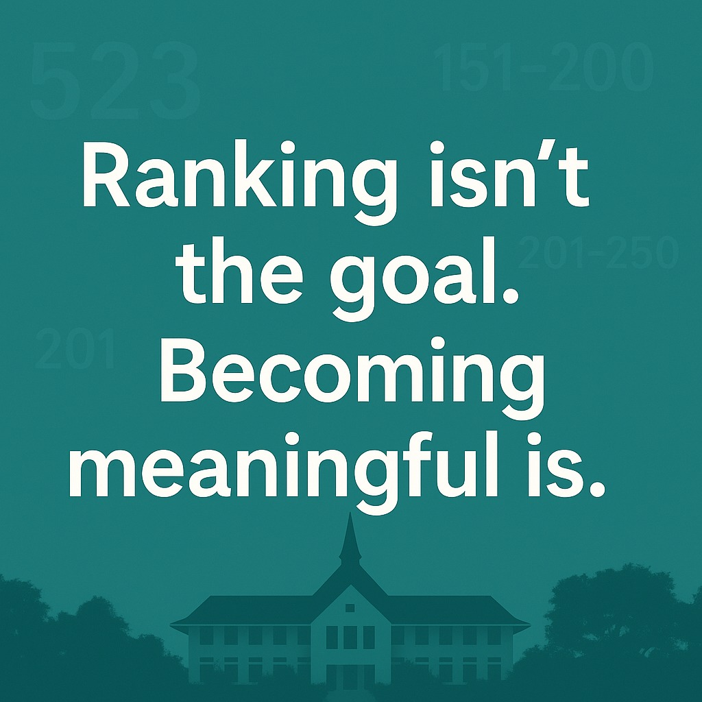

Ranking with Purpose คือการใช้ ranking เป็นเครื่องมือ ไม่ใช่หลงให้มันกลายเป็นเป้าหมายแทนพันธกิจของมหาวิทยาลัย
{kind=link}

บทความนี้เสนอวาระเชิงนโยบายต่อสภามหาวิทยาลัยภายใต้ชื่อ Ranking with Purpose โดยตั้งคำถามสำคัญว่า มหาวิทยาลัยควรใช้ university ranking อย่างไรจึงจะช่วยพัฒนาองค์กรจริง แทนที่จะถูก ranking ลากให้หลงทางจากพันธกิจหลักของตนเอง
ผู้เขียนยอมรับว่าการจัดอันดับมีประโยชน์ในฐานะเครื่องมือสะท้อนภาพลักษณ์ ความน่าเชื่อถือ และศักยภาพในระดับนานาชาติ แต่ปัญหาคือ หากตีความตัวชี้วัดอย่างผิวเผิน มหาวิทยาลัยอาจตกลงไปใน หลุมพรางเชิงนโยบาย ที่ทำให้ลงทุนผิดจุดและวัดความสำเร็จแบบแคบเกินไป
จุดเด่นของโพสต์นี้คือการไม่ปฏิเสธ ranking แบบสุดโต่ง แต่พยายามวางมันไว้ในตำแหน่งที่เหมาะสม คือเป็นเครื่องมือหนึ่งของการกำกับทิศทางและตรวจสอบผล ไม่ใช่คำตอบสำเร็จรูปว่ามหาวิทยาลัยควรพัฒนาอะไรบ้าง
การเข้าใจ ranking แบบผิด ๆ อาจทำให้มหาวิทยาลัยลงทุนผิดทิศทั้งระบบ
ผู้เขียนยกตัวอย่างชัดว่าการคิดว่าเปิดคณะแพทยศาสตร์หรือสาธารณสุขแล้วอันดับจะดีขึ้นโดยตรง เป็นการอ่านความสัมพันธ์ผิด เพราะสิ่งที่เห็นอาจเป็นผลของโครงสร้างมหาวิทยาลัยที่ใหญ่และมีงานวิจัยมากอยู่แล้ว ไม่ใช่เหตุโดยตรงของคะแนน ranking
ในทำนองเดียวกัน การคิดว่าการพัฒนาชุมชนไม่ส่งผลต่อ ranking ก็เป็นความเข้าใจแคบ เพราะระบบใหม่อย่าง THE Impact หรือ UI GreenMetric เริ่มให้ความสำคัญกับ ผลกระทบต่อสังคมและความยั่งยืน มากขึ้นอย่างชัดเจน
Ranking ที่ดีขึ้นไม่ได้แปลว่าเด็กเก่งขึ้นหรือรายได้ดีขึ้นโดยอัตโนมัติ
อีกประเด็นสำคัญของบทความคือการเตือนว่า ความสัมพันธ์ระหว่าง ranking ที่สูงขึ้นกับการได้เด็กเก่ง รายได้มากขึ้น หรือบัณฑิตได้งานดีขึ้น เป็นเพียงความสัมพันธ์ทางอ้อม ไม่ใช่เหตุและผลโดยตรง หากมหาวิทยาลัยเชื่อมสิ่งเหล่านี้เข้าหากันอย่างง่ายเกินไป ก็อาจใช้งบและทรัพยากรไปกับเรื่องที่ ดูดีเชิงตัวเลขแต่ไม่แตะฐานราก
จุดนี้ทำให้ Ranking with Purpose ไม่ใช่แค่คำสวย แต่เป็นกรอบคิดที่บังคับให้ผู้บริหารต้องถามเสมอว่า สิ่งที่ทำอยู่ตอบโจทย์พันธกิจของมหาวิทยาลัยจริงหรือแค่ตอบโจทย์ตัวชี้วัด
แรงจูงใจเชิงตัวเลขถ้าใช้ผิด จะทำลายคุณภาพของงานวิจัยระยะยาว
โพสต์นี้ยังชี้ชัดว่าการให้รางวัลตีพิมพ์โดยไม่คำนึงถึงคุณภาพและ impact จริง อาจสร้างแรงจูงใจเชิงลบ ทำให้งานวิจัยที่ใช้เวลานานแต่มีคุณค่าจริงไม่ได้รับการสนับสนุน ขณะที่งานที่ตอบโจทย์ตัวเลขเร็วกลับได้รางวัลมากกว่า
นี่คือคำเตือนว่าหากมหาวิทยาลัยใช้ ranking แบบขาดวิจารณญาณ ระบบจะค่อย ๆ ผลักให้คนทำงานเลือกสิ่งที่ นับง่ายมากกว่ามีความหมาย ซึ่งสุดท้ายทำลายทุนวิชาการของสถาบันเอง
มหาวิทยาลัยอย่างเกษตรศาสตร์ต้องอ่าน ranking ผ่านบริบทของตัวเอง ไม่ใช่ยอมให้ตัวชี้วัดสากลนิยามคุณค่าทั้งหมด
ผู้เขียนเตือนว่าโครงสร้างการจัดอันดับสากลจำนวนมากยังไม่สะท้อนศักยภาพของสาขาเฉพาะของประเทศไทย เช่น เกษตร พืชสวน ประมง ทรัพยากรธรรมชาติ หรือสังคมชนบท ซึ่งมี citation ต่ำกว่าโดยธรรมชาติจากความจำเพาะด้านพื้นที่ ภาษา และบริบท
ดังนั้นมหาวิทยาลัยจึงควรใช้ ranking เป็นกระจกหนึ่งบาน ไม่ใช่ยกให้มันเป็นผู้ตัดสินคุณค่าทั้งหมดของงานที่มีคุณประโยชน์เชิงสังคมและเศรษฐกิจในประเทศ
ข้อสรุปคือ ranking ต้องมากับ purpose, monitoring และ accountability
ประโยคสรุปของบทความนี้ชัดมากว่า การบริหารเรื่อง ranking ควรตั้งอยู่บนหลัก Ranking with Purpose คือใช้มันเป็นเครื่องมือสะท้อนคุณภาพและทิศทาง ไม่ใช่เป้าหมายในตัวเอง พร้อมกับมีระบบติดตาม ประเมินผล และความรับผิดชอบอย่างต่อเนื่อง
มุมนี้ทำให้ ranking กลับมาอยู่ในบทบาทที่ควรเป็น คือเครื่องมือช่วยตัดสินใจเชิงยุทธศาสตร์อย่างโปร่งใส ไม่ใช่แรงผลักที่ทำให้มหาวิทยาลัยหลงไปไล่ตัวเลขจนลืมว่าตัวเองมีไว้เพื่ออะไร